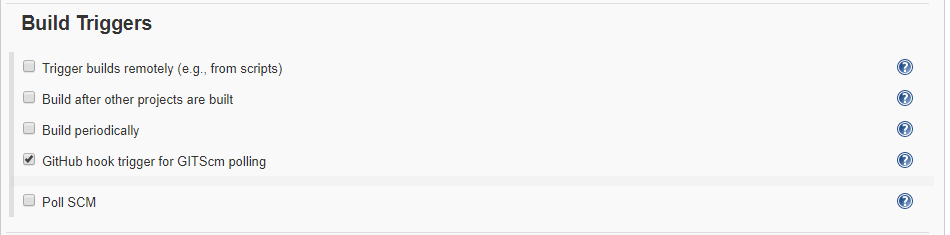
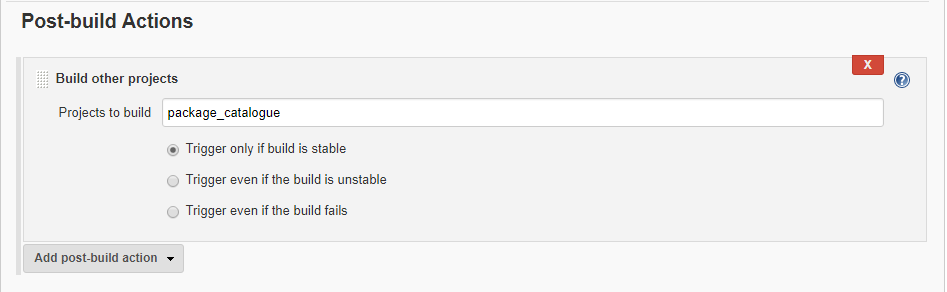
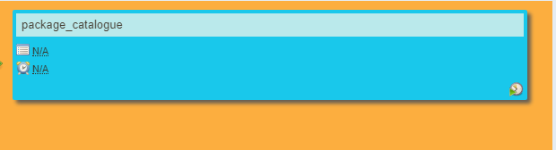
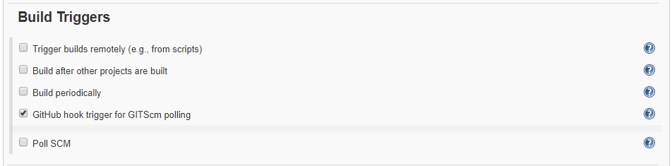
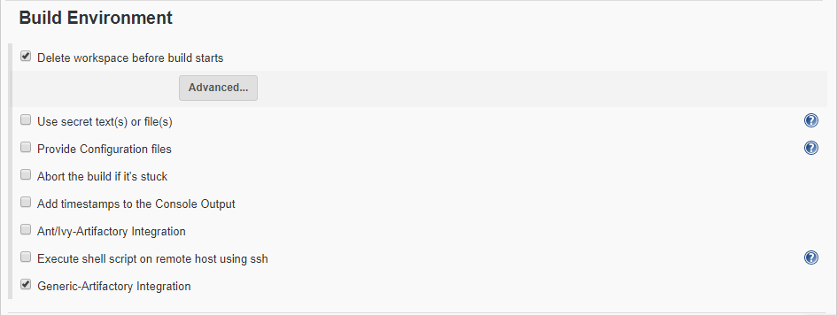
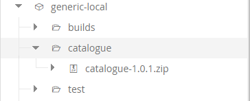

Build pipeline for Catalogue
Catalogue pipeline contains two jobs.
- Unit Testing
- Packaging

Job 1 (Unit Testing)
Jenkins provides an out of box functionality for Junit, and provides a host of plugins for unit testing for other technologies. Unit test verify small block of code behaves as expected under a well-defined set of external conditions. Unit test aim to isolate the code under test. Once the unit testing is successful it goes to next job called packaging.

General
the source code of this available on the github.com
use the following link to download project.
git clone https://github.com/udbc/catalogue.git/
Source Code Management
To get information related to source code management click on unit_test-catalogue and click on configure
In source code management we select option None

Build Triggers
In BUILD TRIGGERS we select the option Github hook trigger for GITScm polling . This option states that whatever is triggered or pushed to master i.e. github.com will immediately know by the jenkins server .

Build
In Build Execute shell script on remote host using ssh
command
export GOPATH=/opt/go
export path="/opt/go/bin:$PATH"
cd /tmp/
rm -r *
git clone https://github.com/udbc/catalogue.git/
cd catalogue/
cp -r images/catalogue/tmp/images
gvt restore

Post Build Actions
If unit test build successfully completed. Its trigger to the package build. suppose unit test build failed. it doesn't trigger package build.

Job 2 (Package catalogue)
Once the unit test build completed. It goes to package build.

Build Triggers
In BUILD TRIGGERS we select the option Github hook trigger for GITScm polling . This option states that whatever is triggered or pushed to master i.e. github.com will immediately know by the jenkins server .

Build
Once the Jenkins server gets triggered it start building the environment . It delete workspace before building the environment.

Once the packaging service is completed . We need to push the details of the package to the Artifactory server with job configuration .
spec:-
{
"files": [
{
"pattern": "app/(*).zip",
"target": "generic-local/catalogue/",
"recursive": "false"
}
]
}

In Build Execute shell script
echo "Validating..."
which go
go version
export GOPATH=$WORKSPACE/opt/go
export PATH="$WORKSPACE/opt/go/bin:$PATH"
echo "Gopath:" $GOPATH
echo "Path:" $PATH
echo "Install gvt..."
go get -u github.com/FiloSottile/gvt
echo "I: Setup the repo..."
mkdir -p $WORKSPACE/opt/go/src/github.com/microservices-demo
cd $WORKSPACE/opt/go/src/github.com/microservices-demo
git clone https://github.com/udbc/catalogue.git
echo "I: Compile the code ..."
cd catalogue/
cp -r images $WORKSPACE/images
gvt restore
cd cmd/cataloguesvc/
CGO_ENABLED=0 GOOS=linux go build -a -installsuffix cgo -o $WORKSPACE/app/catalogue github.com/microservices-demo/catalogue/cmd/cataloguesvc
cd $WORKSPACE/app/
zip catalogue-$GIT_TAG_NAME.zip catalogue
#mv catalogue-$GIT_TAG_NAME.zip /tmp/
#tar -cvzf catalogue-$GIT_TAG_NAME.tar.gz catalogue

Artifact Repository Browser
Once the packaging services deploy completed . To check artifact Repository Browser
